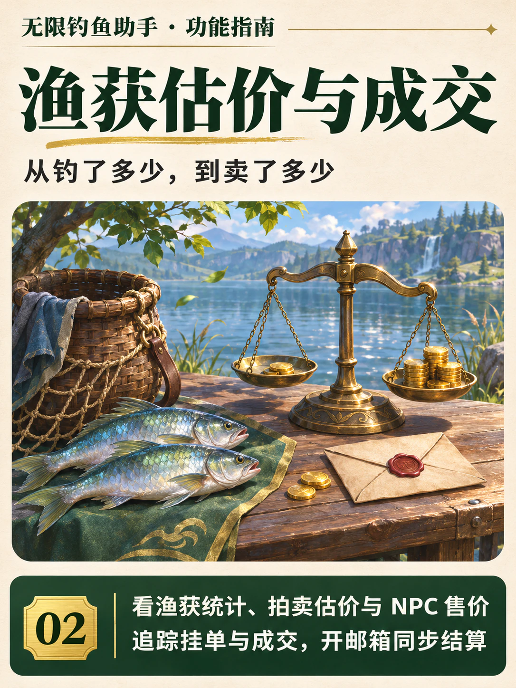
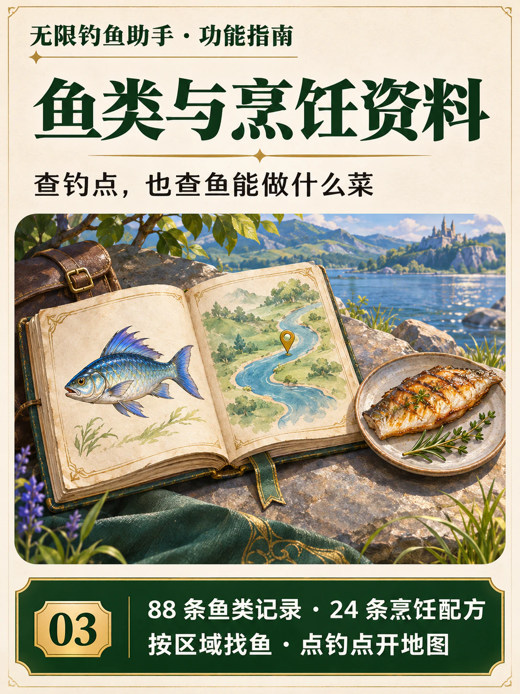

魔兽无限｜钓鱼这事儿，终于让我钓明白了
听到“扑通”，再按一下
以前手忙脚乱的时候，我连鱼竿换没换上都要看一眼。现在用「无限钓鱼助手」一键换装，抛竿和收竿都按同一个键。水花声一响，刚走神的我也知道该干活了。

看见挂单价，我已经在挑坐骑了
钓完先看看拍卖行和 NPC 各给多少，再决定鱼往哪儿卖。挂单价看着挺美，金币真到手还得看邮箱。现在我看两眼就能决定怎么卖，省下来的时间还能再甩两竿。

本来想找个钓点，顺手把晚饭安排了
打开鱼类资料，看看附近能钓什么，点一下就能开地图。搜着搜着又点进了烹饪配方：哦，这鱼还能烤。好嘛，刚才还在算它值几个金币，现在只想留一条给自己吃。
